소방설비기사(기계분야) (2022-04-24 기출문제)
1과목: 소방원론
1. 목조건축물의 화재특성으로 틀린 것은?
- 습도가 낮을수록 연소 확대가 빠르다.
- 화재진행속도는 내화건축물보다 빠르다.
- 화재최성기의 온도는 내화건축물보다 낮다.
- 화재성장속도는 횡방향보다 종방향이 빠르다.
(정답률: 46%)

2. 물이 소화 약제로써 사용되는 장점이 아닌 것은?
- 가격이 저렴하다.
- 많은 양을 구할 수 있다.
- 증발잠열이 크다.
- 가연물과 화학반응이 일어나지 않는다.
(정답률: 55%)
3. 정전기로 인한 화재를 줄이고 방지하기 위한 대책 중 틀린 것은?
- 공기 중 습도를 일정 값 이상으로 유지한다.
- 기기의 전기 절연성을 높이기 위하여 부도체로 차단공사를 한다.
- 공기 이온화 장치를 설치하여 가동시킨다.
- 정전기 축적을 막기 위해 접지선을 이용하여 대지로 연결작업을 한다.
(정답률: 32%)
4. 프로판가스의 최소점화에너지는 일반적으로 약 몇 mJ 정도 되는가?
- 0.25
- 2.5
- 25
- 250
(정답률: 23%)
5. 목재 화재 시 다량의 물을 뿌려 소화할 경우 기대되는 주된 소화효과는?
- 제거효과
- 냉각효과
- 부촉매효과
- 희석효과
(정답률: 60%)
6. 물질의 연소 시 산소공급원이 될 수 없는 것은?
- 탄화칼슘
- 과산화나트륨
- 질산나트륨
- 압축공기
(정답률: 35%)
7. 다음 물질 중 공기 중에서의 연소범위가 가장 넓은 것은?
- 부탄
- 프로판
- 메탄
- 수소
(정답률: 37%)
8. 이산화탄소 20g은 약 몇 mol인가?
- 0.23
- 0.45
- 2.2
- 4.4
(정답률: 35%)
9. 플래시 오버(flash over)에 대한 설명으로 옳은 것은?
- 도시가스의 폭발적 연소를 말한다.
- 휘발유 등 가연성 액체가 넓게 흘러서 발화한 상태를 말한다.
- 옥내화재가 서서히 진행하여 열 및 가연성 기체가 축적되었다가 일시에 연소하여 화염이 크게 발생하는 상태를 말한다.
- 화재층의 불이 상부층으로 올라가는 현상을 말한다.
(정답률: 55%)
10. 제4류 위험물의 성질로 옳은 것은?
- 가연성 고체
- 산화성 고체
- 인화성 액체
- 자기반응성물질
(정답률: 41%)
11. 할론 소화설비에서 Halon 1211 약제의 분자식은?
- CBr2ClF
- CF2BrCl
- CCl2BrF
- BrC2ClF
(정답률: 50%)
12. 다음 중 가연물의 제거를 통한 소화 방법과 무관한 것은?
- 산불의 확산방지를 위하여 산림의 일부를 벌채한다.
- 화학반응기의 화재 시 원료 공급관의 밸브를 잠근다.
- 전기실 화재 시 IG-541 약제를 방출한다.
- 유류탱크 화재 시 주변에 있는 유류탱크의 유류를 다른 곳으로 이동시킨다.
(정답률: 60%)
13. 건물화재의 표준시간-온도곡선에서 화재발생 후 1시간이 경과할 경우 내부 온도는 약 몇 ℃ 정도 되는가?
- 125
- 325
- 640
- 925
(정답률: 37%)
14. 위험물안전관리법령상 위험물로 분류되는 것은?
- 과산화수소
- 압축산소
- 프로판가스
- 포스겐
(정답률: 32%)
15. 연기에 의한 감광계수가 0.1m-1, 가시거리가 20~30m일 때의 상황으로 옳은 것은?
- 건물 내부에 익숙한 사람이 피난에 지장을 느낄 정도
- 연기감지기가 작동할 정도
- 어두운 것을 느낄 정도
- 앞이 거의 보이지 않을 정도
(정답률: 32%)
16. 물질의 취급 또는 위험성에 대한 설명 중 틀린 것은?
- 융해열은 점화원이다.
- 질산은 물과 반응 시 발열 반응하므로 주의를 해야 한다.
- 네온, 이산화탄소, 질소는 불연성 물질로 취급한다.
- 암모니아를 충전하는 공업용 용기의 색상은 백색이다.
(정답률: 28%)
17. Fourier법칙(전도)에 대한 설명으로 틀린 것은?
- 이동열량은 전열체의 단면적에 비례한다.
- 이동열량은 전열체의 두께에 비례한다.
- 이동열량은 전열체의 열전도도에 비례한다.
- 이동열량은 전열체 내·외부의 온도차에 비례한다.
(정답률: 28%)
18. 자연발화가 일어나기 쉬운 조건이 아닌 것은?
- 열전도율이 클 것
- 적당량의 수분이 존재할 것
- 주위의 온도가 높을 것
- 표면적이 넓을 것
(정답률: 28%)
19. 분말소화약제 중 탄산수소칼륨(KHCO3)과 요소(CO(NH2)2)와의 반응물을 주성분으로 하는 소화약제는?
- 제1종 분말
- 제2종 분말
- 제3종 분말
- 제4종 분말
(정답률: 19%)
20. 폭굉(detonation)에 관한 설명으로 틀린 것은?
- 연소속도가 음속보다 느릴 때 나타난다.
- 온도의 상승은 충격파의 압력에 기인한다.
- 압력상승은 폭연의 경우보다 크다.
- 폭굉의 유도거리는 배관의 지름과 관계가 있다.
(정답률: 37%)
2과목: 소방유체역학
21. 2MPa, 400℃의 과열 증기를 단면확대 노즐을 통하여 20kPa 로 분출시킬 경우 최대 속도는 약 몇 m/s 인가? (단, 노즐입구에서 엔탈피는 3243.3kJ/㎏이고, 출구에서 엔탈피는 2345.8kJ/㎏이며, 입구속도는 무시한다.)
- 1340
- 1349
- 1402
- 1412
(정답률: 10%)
22. 원형 물탱크의 안지름이 1m이고, 아래쪽 옆면에 안지름 100mm인 송출관을 통해 물을 수송할 때의 순간 유속이 3m/s 이었다. 이 때 탱크 내 수면이 내려오는 속도는 몇 m/s 인가?
- 0.015
- 0.02
- 0.025
- 0.03
(정답률: 10%)
23. 지름 5㎝인 구가 대류에 의해 열을 외부공기로 방출한다. 이 구는 50W의 전기히터에 의해 내부에서 가열되고 있고 구 표면과 공기 사이의 온도차가 30℃라면 공기와 구 사이의 대류 열전달계수는 약 몇 W/m2·℃ 인가?
- 111
- 212
- 313
- 414
(정답률: 22%)
24. 소화펌프의 회전수가 1450 rpm일 때 양정이 25m, 유량이 5m3/min이었다. 펌프의 회전수를 1740 rpm으로 높일 경우 양정(m)과 유량(m3/min)은? (단, 완전상사가 유지되고, 회전차의 지름은 일정하다.)
- 양정 : 17, 유량 : 4.2
- 양정 : 21, 유량 : 5
- 양정 : 30.2, 유량 : 5.2
- 양정 : 36, 유량 : 6
(정답률: 14%)
25. 다음 중 이상기체에서 폴리트로픽 지수(n)가 1인 과정은?
- 단열 과정
- 정압 과정
- 등온 과정
- 정적 과정
(정답률: 14%)
26. 정수력에 의해 수직평판의 힌지(hinge)점에 작용하는 단위폭 당 모멘트를 바르게 표시한 것은? (단, ρ는 유체의 밀도, g는 중력가속도이다.)
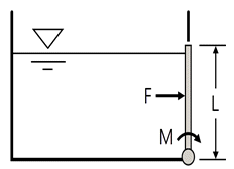
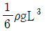
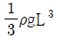
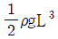
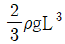
(정답률: 10%)
27. 그림과 같은 중앙부분에 구멍이 뚫린 원판에 지름 20㎝의 원형 물제트가 대기압 상태에서 5m/s의 속도로 충돌하여, 원판 뒤로 지름 10㎝의 원형 물제트가 5m/s의 속도로 흘러나가고 있을 때, 원판을 고정하기 위한 힘은 약 몇 N인가?
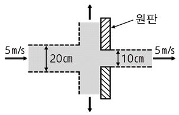
- 589
- 673
- 770
- 893
(정답률: 10%)
28. 펌프의 공동현상(cavitation)을 방지하기 위한 방법이 아닌 것은?
- 펌프의 설치 위치를 되도록 낮게 하여 흡입양정을 짧게 한다.
- 펌프의 회전수를 크게 한다.
- 펌프의 흡입 관경을 크게 한다.
- 단흡입펌프보다는 양흡입펌프를 사용한다.
(정답률: 32%)
29. 물을 송출하는 펌프의 소요축동력이 70㎾, 펌프의 효율이 78%, 전양정이 60m일 때, 펌프의 송출유량은 약 몇 m3/min 인가?
- 5.57
- 2.57
- 1.09
- 0.093
(정답률: 32%)
30. 그림에 표시된 원형 관로로 비중이 0.8, 점성계수가 0.4 Pa·s인 기름이 층류로 흐른다. ①지점의 압력이 111.8kPa이고, ②지점의 압력이 206.9kPa일 때 유체의 유량은 약 몇 L/s인가?
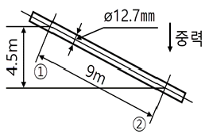
- 0.0149
- 0.0138
- 0.0121
- 0.0106
(정답률: 5%)
31. 다음 중 점성계수 μ의 차원은 어느 것인가? (단, M : 질량, L : 길이, T : 시간의 차원이다.)
- ML-1T-1
- ML-1T-2
- ML-2T-1
- M-1L-1T
(정답률: 19%)
32. 20℃의 이산화탄소 소화약제가 체적 4m3의 용기 속에 들어있다. 용기 내 압력이 1MPa일 때 이산화탄소 소화약제의 질량은 약 몇 ㎏인가? (단, 이산화탄소의 기체상수는 189J/㎏·K 이다.)
- 0.069
- 0.072
- 68.9
- 72.2
(정답률: 10%)
33. 압축률에 대한 설명으로 틀린 것은?
- 압축률은 체적탄성계수의 역수이다.
- 압축률의 단위는 압력의 단위인 Pa 이다.
- 밀도와 압축률의 곱은 압력에 대한 밀도의 변화율과 같다.
- 압축률이 크다는 것은 같은 압력변화를 가할 때 압축하기 쉽다는 것을 의미한다.
(정답률: 14%)
34. 밸브가 장치된 지름 10㎝인 원관에 비중 0.8인 유체가 2m/s의 평균속도로 흐르고 있다. 밸브 전후의 압력 차이가 4kPa일 때, 이 밸브의 등가길이는 몇 m 인가? (단, 관의 마찰계수는 0.02이다.)
- 10.5
- 12.5
- 14.5
- 16.5
(정답률: 10%)
35. 그림과 같이 물이 수조에 연결된 원형 파이프를 통해 분출하고 있다. 수면과 파이프의 출구 사이에 총 손실수두가 200mm이라고 할 때 파이프에서의 방출유량은 약 몇 m3/s인가? (단, 수면 높이의 변화 속도는 무시한다.)
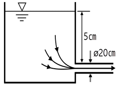
- 0.285
- 0.295
- 0.3⑤
- 0.315
(정답률: 5%)
36. 유체의 흐름에 적용되는 다음과 같은 베르누이 방정식에 관한 설명으로 옳은 것은?
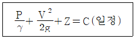
- 비정상상태의 흐름에 대해 적용된다.
- 동일한 유선상이 아니더라도 흐름 유체의 임의점에 대해 항상 적용된다.
- 흐름 유체의 마찰효과가 충분히 고려된다.
- 압력수두, 속도수두, 위치수두의 합이 일정함을 표시한다.
(정답률: 28%)
37. 유체의 흐름 중 난류 흐름에 대한 설명으로 틀린 것은?
- 원관 내부 유동에서는 레이놀즈수가 약 4000 이상인 경우에 해당한다.
- 유체의 각 입자가 불규칙한 경로를 따라 움직인다.
- 유체의 입자가 갖는 관성력이 입자에 작용하는 점성력에 비하여 매우 크다.
- 원관 내 완전 발달 유동에서는 평균속도가 최대속도의 1/2 이다.
(정답률: 32%)
38. 어떤 물체가 공기 중에서 무게는 588N이고, 수중에서 무게는 98N이었다. 이 물체의 체적(V)과 비중(S)은?
- V = 0.⑤m3, S = 1.2
- V = 0.⑤m3, S = 1.5
- V = 0.5m3, S = 1.2
- V = 0.5m3, S = 1.5
(정답률: 19%)
39. 유체에 관한 설명 중 옳은 것은?
- 실제유체는 유동할 때 마찰손실이 생기지 않는다.
- 이상유체는 높은 압력에서 밀도가 변화하는 유체이다.
- 유체에 압력을 가하면 체적이 줄어드는 유체는 압축성 유체이다.
- 압력을 가해도 밀도변화가 없으며 점성에 의한 마찰손실만 있는 유체가 이상유체이다.
(정답률: 28%)
40. 그림에서 물과 기름의 표면은 대기에 개방되어 있고, 물과 기름 표면의 높이가 같을 때 h는 약 몇 m 인가? (단, 기름의 비중은 0.8, 액체 A의 비중은 1.6이다.)
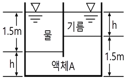
- 1
- 1.1
- 1.125
- 1.25
(정답률: 14%)
3과목: 소방관계법규
41. 다음은 소방기본법령상 소방본부에 대한 설명이다. ( ) 에 알맞은 내용은?
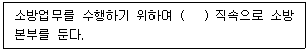
- 경찰서장
- 시·도지사
- 행정안전부장관
- 소방청장
(정답률: 41%)
42. 위험물안전관리법령상 제4류 위험물을 저장·취급하는 제조소에 “화기엄금”이란 주의사항을 표시하는 게시판을 설치할 경우 게시판의 색상은?
- 청색바탕에 백색문자
- 적색바탕에 백색문자
- 백색바탕에 적색문자
- 백색바탕에 흑색문자
(정답률: 32%)
43. 소방시설공사업법령상 소방시설업의 등록을 하지 아니하고 영업을 한 자에 대한 벌칙기준으로 옳은 것은?
- 1년 이하의 징역 또는 1천만원 이하의 벌금
- 2년 이하의 징역 또는 2천만원 이하의 벌금
- 3년 이하의 징역 또는 3천만원 이하의 벌금
- 5년 이하의 징역 또는 5천만원 이하의 벌금
(정답률: 37%)
44. 위험물안전관리법령상 유별을 달리하는 위험물을 혼재하여 저장할 수 있는 것으로 짝지어진 것은?
- 제1류－제2류
- 제2류－제3류
- 제3류－제4류
- 제5류－제6류
(정답률: 31%)
45. 소방기본법령상 상업지역에 소방용수시설 설치 시 소방대상물 과의 수평거리 기준은 몇 m 이하인가?
- 100
- 120
- 140
- 160
(정답률: 28%)
46. 화재예방, 소방시설 설치·유지 및 안전관리에 관한 법령상 종합정밀점검 실시 대상이 되는 특정소방대상물의 기준 중 다음 ( ) 안에 알맞은 것은?
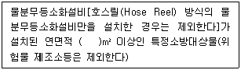
- 2000
- 3000
- 4000
- 5000
(정답률: 23%)
47. 다음 소방기본법령상 용어 정의에 대한 설명으로 옳은 것은?
- 소방대상물이란 건축물, 차량, 선박(항구에 매어둔 선박은 제외) 등을 말한다.
- 관계인이란 소방대상물의 점유예정자를 포함한다.
- 소방대란 소방공무원, 의무소방원, 의용소방대원으로 구성된 조직체이다.
- 소방대장이란 화재, 재난·재해, 그 밖의 위급한 상황이 발생한 현장에서 소방대를 지휘하는 사람(소방서장은 제외)이다.
(정답률: 37%)
48. 화재예방, 소방시설 설치·유지 및 안전관리에 관한 법령상 공동 소방안전관리자를 선임하여야 하는 특정소방대상물 중 고층 건축물은 지하층을 제외한 층수가 최소 몇 층 이상인 건축물만 해당되는가?
- 6층
- 11층
- 20층
- 30층
(정답률: 50%)
49. 소방기본법령상 특수가연물의 저장 및 취급의 기준 중 ( )에 들어갈 내용으로 옳은 것은? (단, 석탄·목탄류의 경우는 제외한다.)
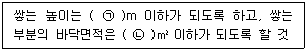
- ㉠ 15, ㉡ 200
- ㉠ 15, ㉡ 300
- ㉠ 10, ㉡ 30
- ㉠ 10, ㉡ 50
(정답률: 23%)
50. 화재예방, 소방시설 설치·유지 및 안전관리에 관한 법령상 자동화재탐지설비를 설치하여야 하는 특정소방대상물의 기준으로 틀린 것은?
- 공장 및 창고시설로서 「소방기본법 시행령」에서 정하는 수량의 500배 이상의 특수가연물을 저장·취급하는 것
- 지하가(터널은 제외한다)로서 연면적 600m2 이상인 것
- 숙박시설이 있는 수련시설로서 수용인원 100명 이상인 것
- 장례시설 및 복합건축물로서 연면적 600m2 이상인 것
(정답률: 32%)
51. 위험물안전관리법령에서 정하는 제3류 위험물에 해당하는 것은?
- 나트륨
- 염소산염류
- 무기과산화물
- 유기과산화물
(정답률: 23%)
52. 화재예방, 소방시설 설치·유지 및 안전관리에 관한 법령상 방염성능기준 이상의 실내장식물 등을 설치하여야 하는 특정소방대상물이 아닌 것은?
- 방송국
- 종합병원
- 11층 이상의 아파트
- 숙박이 가능한 수련시설
(정답률: 41%)
53. 화재예방, 소방시설 설치·유지 및 안전관리에 관한 법령상 무창층으로 판정하기 위한 개구부가 갖추어야 할 요건으로 틀린 것은?
- 크기는 반지름 30㎝ 이상의 원이 내접할 수 있을 것
- 해당 층의 바닥면으로부터 개구부 밑부분까지 높이가 1.2m 이내일 것
- 도로 또는 차량이 진입할 수 있는 빈터를 향할 것
- 화재 시 건축물로부터 쉽게 피난할 수 있도록 창살이나 그 밖의 장애물이 설치되지 아니할 것
(정답률: 46%)
54. 소방시설공사업법령상 일반 소방시설설계업(기계분야)의 영업범위에 대한 기준 중 ( )에 알맞은 내용은? (단, 공장의 경우는 제외한다.)
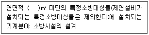
- 10000
- 20000
- 30000
- 50000
(정답률: 28%)
55. 화재예방, 소방시설 설치·유지 및 안전관리에 관한 법령상 건축허가 등을 할 때 미리 소방본부장 또는 소방서장의 동의를 받아야 하는 건축물 등의 범위기준이 아닌 것은?
- 노유자시설 및 수련시설로서 연면적 100m2 이상인 건축물
- 지하층 또는 무창층이 있는 건축물로서 바닥면적이 150m2 이상인 층이 있는 것
- 차고·주차장으로 사용되는 바닥면적이 200m2 이상인 층이 있는 건축물이나 주차시설
- 장애인 의료재활시설로서 연면적 300m2 이상인 건축물
(정답률: 23%)
56. 다음 중 소방기본법령에 따라 화재예방상 필요하다고 인정되거나 화재위험경보시 발령하는 소방신호의 종류로 옳은 것은?
- 경계신호
- 발화신호
- 경보신호
- 훈련신호
(정답률: 37%)
57. 소방기본법령상 보일러 등의 위치·구조 및 관리와 화재예방을 위하여 불의 사용에 있어서 지켜야 하는 사항 중 보일러에 경유·등유 등 액체연료를 사용하는 경우에 연료탱크는 보일러본체로부터 수평거리 최소 몇 m 이상의 간격을 두어 설치해야 하는가?
- 0.5
- 0.6
- 1
- 2
(정답률: 27%)
58. 화재예방, 소방시설 설치·유지 및 안전관리에 관한 법령상 “대통령령으로 정하는 특정소방대상물”의 관계인은 그 장소에 상시 근무하거나 거주하는 사람에게 소방훈련과 소방안전관리에 필요한 교육을 하여야 한다. 다음 “대통령령으로 정하는 특정소방대상물”에 대한 설명 중 ( )에 알맞은 내용은?
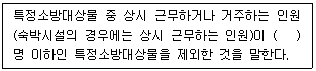
- 3
- 5
- 7
- 10
(정답률: 19%)
59. 화재예방, 소방시설 설치·유지 및 안전관리에 관한 법령상 제조 또는 가공 공정에서 방염처리를 한 물품 중 방염대상물품이 아닌 것은?
- 카펫
- 전시용 합판
- 창문에 설치하는 커튼류
- 두께가 2mm 미만인 종이벽지
(정답률: 46%)
60. 위험물안전관리법령상 관계인이 예방규정을 정하여야 하는 위험물 제조소등에 해당하지 않는 것은?
- 지정수량 10배의 특수인화물을 취급하는 일반취급소
- 지정수량 20배의 휘발유를 고정된 탱크에 주입하는 일반 취급소
- 지정수량 40배의 제3석유류를 용기에 옮겨 담는 일반취급소
- 지정수량 15배의 알코올을 버너에 소비하는 장치로 이루어진 일반취급소
(정답률: 14%)
4과목: 소방기계시설의 구조 및 원리
61. 할론소화설비의 화재안전기준에 따른 할론소화설비의 수동식 기동장치의 설치기준으로 틀린 것은?
- 국소방출방식은 방호대상물마다 설치할 것
- 기동장치의 방출용스위치는 음향경보장치와 개별적으로 조작될 수 있는 것으로 할 것
- 전기를 사용하는 기동장치에는 전원표시등을 설치할 것
- 조작부는 바닥으로부터 높이 0.8m 이상 1.5m 이하의 위치에 설치할 것
(정답률: 37%)
62. 미분무소화설비의 화재안전기준에 따라 최저사용압력이 몇 MPa를 초과할 때 고압 미분무소화설비로 분류하는가?
- 1.2
- 2.5
- 3.5
- 4.2
(정답률: 14%)
63. 피난기구의 화재안전기준에 따른 피난기구의 설치 및 유지에 관한 사항 중 틀린 것은?
- 피난기구를 설치하는 개구부는 서로 동일직선상의 위치에 있을 것
- 설치장소에는 피난기구의 위치를 표시하는 발광식 또는 축광식표지와 그 사용방법을 표시한 표지를 부착할 것
- 피난기구는 소방대상물의 기둥·바닥·보 기타 구조상 견고한 부분에 볼트조임·매입·용접 기타의 방법으로 견고하게 부착할 것
- 피난기구는 계단·피난구 기타 피난시설로부터 적당한 거리에 있는 안전한 구조로 된 피난 또는 소화활동상 유효한 개구부에 고정하여 설치할 것
(정답률: 32%)
64. 이산화탄소소화설비의 화재안전기준에 따라 케이블실에 전역방출방식으로 이산화탄소소화설비를 설치하고자 한다. 방호구역 체적은 750m3, 개구부의 면적은 3m2이고, 개구부에는 자동폐쇄장치가 설치되어 있지 않다. 이때 필요한 소화약제의 양은 최소 몇 ㎏ 이상인가?
- 930
- 10⑤
- 1230
- 1530
(정답률: 10%)
65. 다음 중 피난기구의 화재안전기준에 따라 의료시설에 구조대를 설치하여야 할 층은?
- 지하 2층
- 지하 1층
- 지상 1층
- 지상 3층
(정답률: 37%)
66. 화재안전기준상 물계통의 소화설비 중 펌프의 성능시험배관에 사용되는 유량측정장치는 펌프의 정격 토출량의 몇 % 이상 측정할 수 있는 성능이 있어야 하는가?
- 65
- 100
- 120
- 175
(정답률: 42%)
67. 피난기구의 화재안전기준상 근린생활시설 지하층에 적응성이 있는 피난기구는? (단, 근린생활시설 중 입원실이 있는 의원·접골원·조산원에 한한다.)
- 피난용트랩
- 미끄럼대
- 구조대
- 피난교
(정답률: 32%)
68. 제연설비의 화재안전기준에 따른 배출풍도의 설치기준 중 다음 ( ) 안에 알맞은 것은?
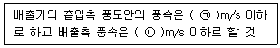
- ㉠ 15, ㉡ 10
- ㉠ 10, ㉡ 15
- ㉠ 20, ㉡ 15
- ㉠ 15, ㉡ 20
(정답률: 28%)
69. 스프링클러헤드에서 이융성 금속으로 융착되거나 이융성 물질에 의하여 조립된 것은?
- 프레임(frame)
- 디플렉터(deflector)
- 유리벌브(glass bulb)
- 퓨지블링크(fusible link)
(정답률: 28%)
70. 포소화설비의 화재안전기준상 특수가연물을 저장·취급하는 공장 또는 창고에 적응성이 없는 포소화설비는?
- 고정포방출설비
- 포소화전설비
- 압축공기포소화설비
- 포워터스프링클러설비
(정답률: 23%)
71. 분말소화설비의 화재안전기준상 자동화재탐지설비의 감지기의 작동과 연동하는 분말소화설비 자동식 기동장치의 설치기준 중 다음 ( ) 안에 알맞은 것은?
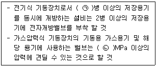
- ㉠ 3, ㉡ 2.5
- ㉠ 7, ㉡ 2.5
- ㉠ 3, ㉡ 25
- ㉠ 7, ㉡ 25
(정답률: 28%)
72. 분말소화설비의 화재안전기준상 분말소화약제의 가압용가스 용기에 대한 설명으로 틀린 것은?
- 가압용가스 용기를 3병 이상 설치한 경우에는 2개 이상의 용기에 전자개방밸브를 부착할 것
- 가압용가스 용기에는 2.5MPa 이하의 압력에서 조정이 가능한 압력조정기를 설치할 것
- 가압용가스에 질소가스를 사용하는 것의 질소가스는 소화 약제 1㎏마다 20L(35℃에서 1기압의 압력상태로 환산한 것) 이상으로 할 것
- 축압용가스에 질소가스를 사용하는 것의 질소가스는 소화 약제 1㎏에 대하여 10L(35℃에서 1기압의 압력상태로 환산한 것) 이상으로 할 것
(정답률: 32%)
73. 화재조기진압용 스프링클러설비의 화재안전기준상 화재조기진압용 스프링클러설비 가지배관의 배열기준 중 천장의 높이가 9.1m 이상 13.7m 이하인 경우 가지배관 사이의 거리 기준으로 옳은 것은?
- 2.4m 이상 3.1m 이하
- 2.4m 이상 3.7m 이하
- 6.0m 이상 8.5m 이하
- 6.0m 이상 9.3m 이하
(정답률: 23%)
74. 포소화설비에서 펌프의 토출관에 압입기를 설치하여 포소화약제 압입용 펌프로 포소화약제를 압입시켜 혼합하는 방식은?
- 라인 프로포셔너
- 펌프 프로포셔너
- 프레져 프로포셔너
- 프레져사이드 프로포셔너
(정답률: 28%)
75. 스프링클러설비의 화재안전기준상 스프링클러설비의 배관 내 사용압력이 몇 MPa 이상일 때 압력배관용 탄소강관을 사용해야 하는가?
- 0.1
- 0.5
- 0.8
- 1.2
(정답률: 37%)
76. 지하구의 화재안전기준에 따라 연소방지설비전용헤드를 사용할 때 배관의 구경이 65mm인 경우 하나의 배관에 부착하는 살수헤드의 최대 개수로 옳은 것은?
- 2
- 3
- 5
- 6
(정답률: 32%)
77. 지하구의 화재안전기준에 따른 지하구의 통합감시시설 설치기준으로 틀린 것은?
- 소방관서와 지하구의 통제실 간에 화재 등 소방활동과 관련된 정보를 상시 교환할 수 있는 정보통신망을 구축할 것
- 수신기는 방재실과 공동구의 입구 및 연소방지설비 송수구가 설치된 장소(지상)에 설치할 것
- 정보통신망(무선통신망 포함)은 광케이블 또는 이와 유사한 성능을 가진 선로일 것
- 수신기는 화재신호, 경보, 발화지점 등 수신기에 표시되는 정보가 기준에 적합한 방식으로 119상황실이 있는 관할 소방관서의 정보통신장치에 표시되도록 할 것
(정답률: 14%)
78. 소화수조 및 저수조의 화재안전기준에 따라 소화용수설비에 설치하는 채수구의 지면으로부터 설치 높이 기준은?
- 0.3m 이상 1m 이하
- 0.3m 이상 1.5m 이하
- 0.5m 이상 1m 이하
- 0.5m 이상 1.5m 이하
(정답률: 32%)
79. 다음은 물분무소화설비의 화재안전기준에 따른 수원의 저수량 기준이다. ( )에 들어갈 내용으로 옳은 것은?
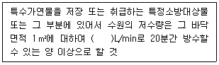
- 10
- 12
- 15
- 20
(정답률: 23%)
80. 제연설비의 화재안전기준상 제연설비 설치장소의 제연구역 구획 기준으로 틀린 것은?
- 하나의 제연구역의 면적은 1000m2 이내로 할 것
- 하나의 제연구역은 직경 60m 원내에 들어갈 수 있을 것
- 하나의 제연구역은 3개 이상 층에 미치지 아니하도록 할 것
- 통로상의 제연구역은 보행중심선의 길이가 60m를 초과하지 아니할 것
(정답률: 32%)